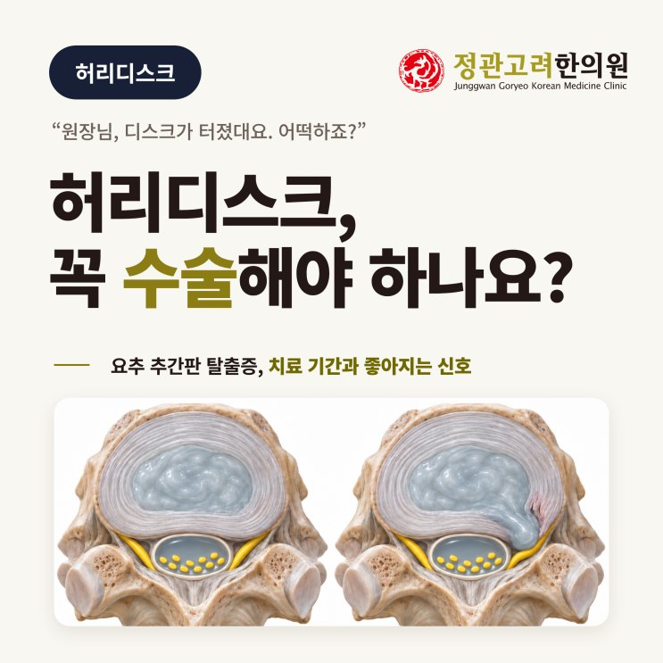
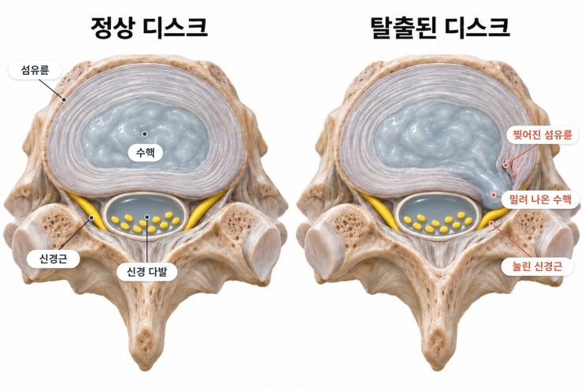
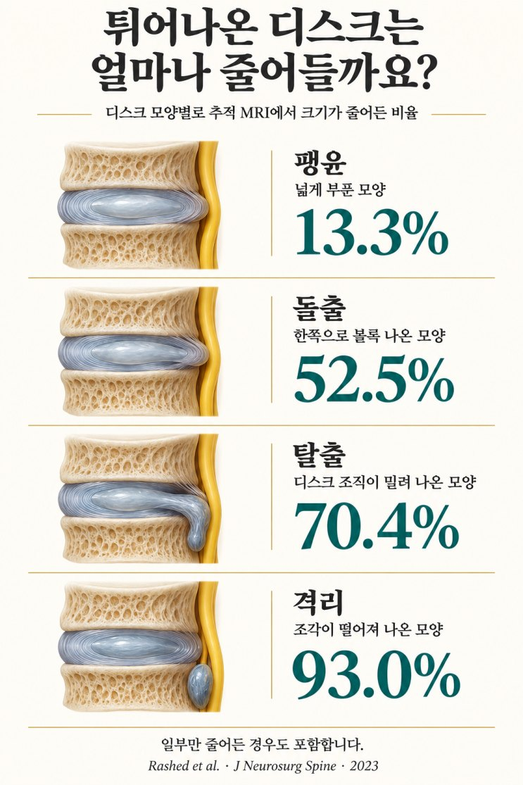
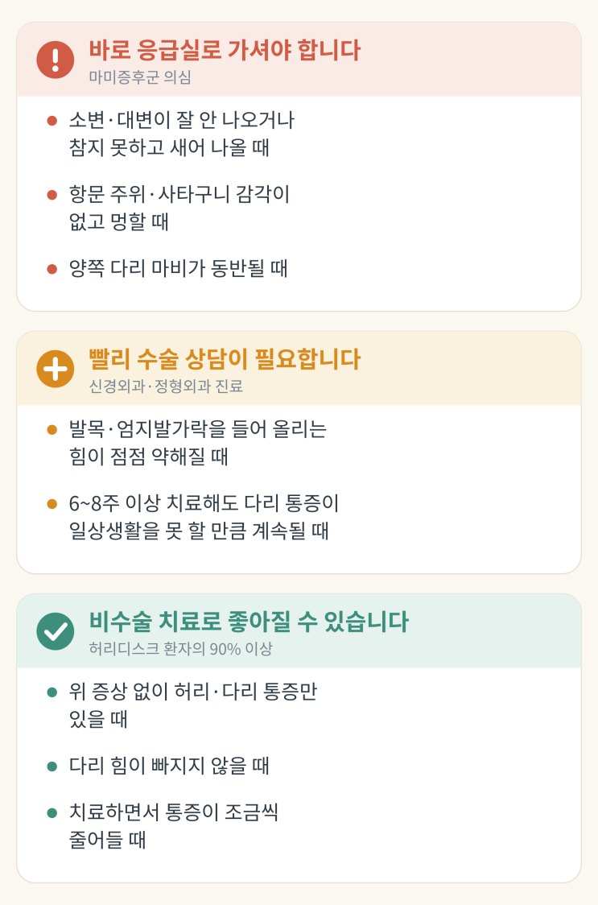
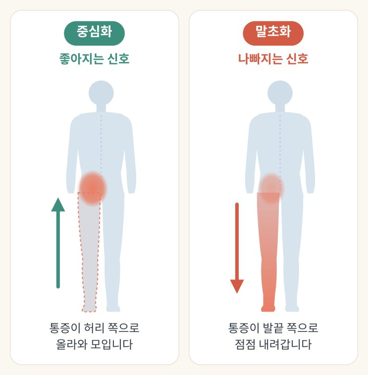
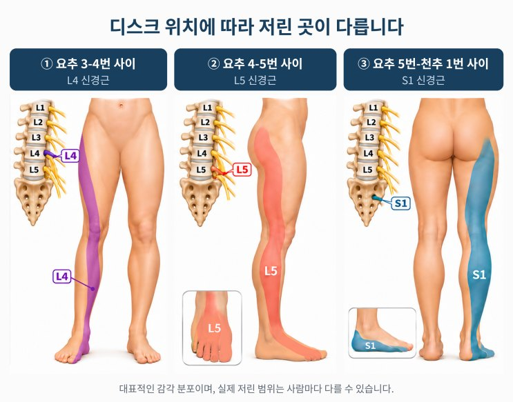

허리디스크, 꼭 수술해야 하나요? 치료 기간과 좋아지는 신호
이 글에서 알 수 있는 내용
- 허리디스크, 수술이 필요한 경우와 아닌 경우
- 양방 치료와 한방 치료, 침치료는 어떻게 도움이 될까요
- 치료 기간과 좋아지는 신호, 디스크 위치별 저린 곳

MRI를 찍고 "디스크가 터졌습니다"라는 말을 들으면 덜컥 겁부터 납니다.
"수술해야 하나요?"
"얼마나 치료받아야 낫나요?"
진료실에서 가장 많이 듣는 질문입니다.
한마디로 요약해서 말씀드리면,
허리디스크는 대부분 수술 없이 좋아집니다.
다만 수술을 서둘러야 하는 경우도 분명히 있습니다.
차근차근 설명드리겠습니다.
허리디스크란?
허리디스크의 정확한 의학 명칭은 '요추 추간판 탈출증'입니다.
척추뼈와 척추뼈 사이에는 충격을 흡수하는 쿠션이 있습니다.
이것을 추간판, 흔히 '디스크'라고 부릅니다.
- 수핵 : 디스크 가운데에 있는 젤리 같은 부분
- 섬유륜 : 수핵 바깥을 감싸고 있는 질긴 막
섬유륜이 찢어지면서 수핵이 밖으로 밀려 나오면, 바로 옆을 지나가는 신경을 압박하고 염증을 일으킵니다.
이것이 허리디스크입니다.

허리디스크의 대표적인 증상은 두 가지입니다.
- 요통 : 허리가 아픈 증상
- 하지방산통 : 다리 쪽으로 뻗치는 통증
밀려 나온 수핵이 다리로 가는 신경을 자극하면, 엉덩이에서 허벅지, 종아리, 발까지 찌릿하거나 당길 수 있습니다.
허리는 별로 안 아픈데 한쪽 다리만 아프거나 저린 분도 있습니다.
수술해야 하나요?
대부분은 수술 없이 치료할 수 있습니다.
허리디스크 환자 100명 중 수술이 필요한 분은 5~10명 정도입니다.1
"터져 나온 디스크가 그대로 남아 있으면 어떡하죠?"
걱정하실 필요가 없습니다.
튀어나온 디스크는 시간이 지나면서 우리 몸이 스스로 흡수해 줄어드는 경우가 많습니다.
이것을 자연 흡수라고 합니다.
여러 연구를 모아 분석해 보니, 디스크가 많이 튀어나올수록 오히려 더 잘 흡수되었습니다.3,4

(MRI 재촬영 시점은 평균 약 11.5개월 뒤였습니다.)
밖으로 많이 나온 디스크는 우리 몸의 면역세포가 '이물질'로 알아보고 청소하기 때문입니다.
우리 몸의 자생력이 일하는 것이죠.
이런 경우에는 수술을 고려해야 합니다
아래 경우는 망설이지 마시고 신경외과·정형외과 전문의 진료를 받으셔야 합니다.
바로 응급실로 가셔야 하는 경우
- 대소변이 안 나오거나 새는 증상이 있을 때
- 항문 주위, 사타구니가 감각이 없고 멍할 때
- 양쪽 다리 힘이 급격히 떨어질 때
이 상태를 '마미증후군'이라고 합니다.
신경 다발 전체가 눌린 응급 상황입니다.
※ 이 중 하나라도 생기면 바로 응급실로 가셔야 합니다.
수술이 늦어지면 마비가 남을 수 있습니다.2
빨리 수술 상담이 필요한 경우
- 발목이나 엄지발가락을 들어 올리는 힘이 점점 약해질 때 (발이 끌리거나 슬리퍼가 잘 벗겨짐)
- 6~8주 이상 충분히 치료했는데도 다리 통증이 일상생활을 못 할 만큼 계속될 때1,2
반대로, 이런 경우가 아니라면 서둘러 수술할 필요는 없습니다.
심한 좌골신경통 환자를 두 그룹으로 나눠 비교한 연구가 있습니다.
'바로 수술한 그룹'과 '비수술 치료를 계속한 그룹'입니다.
수술을 일찍 받으면 다리 통증은 더 빨리 줄 수 있습니다.
다만 우선 비수술 치료를 받고 필요할 때 수술한 분들도 1년 뒤 경과는 비슷했습니다.5

양방 치료와 한방 치료
양방 치료와 한방 치료는 서로 대립하는 치료가 아닙니다.
통증의 정도와 회복 단계에 맞춰 함께 활용할 수 있습니다.
양방 치료와 병행 권유
양방의 약물치료(소염진통제, 근이완제)와 신경차단술은 급성기 통증을 잡는 데 효과적입니다.
신경차단술은 신경 주변의 염증을 직접 가라앉히는 주사치료입니다.
통증이 심해 밤잠을 설치거나, 한의원에 오시는 것조차 힘드신 분들도 계십니다.
이런 분들께는 저 역시 양방 치료를 함께 받아 급한 통증의 불부터 끄시라고 권합니다.
통증이 가라앉으면 몸이 스스로 회복하도록 돕는 치료를 함께 하셔야 합니다.
한방 치료
한방 치료는 염증을 가라앉히고, 굳은 근육을 풀고, 신경 주변의 혈액순환을 돕습니다.
몸이 디스크를 스스로 흡수하고 회복하도록 돕는 것이 목표입니다.
- 침 · 전침 : 경직된 척추 기립근과 신경 주변 근육을 이완합니다. 전기 자극을 더해 통증 신호를 차단합니다.
- 전자뜸 : 화상 위험을 줄이면서 일정한 온열 자극을 전달합니다. 혈류 순환을 돕고 굳은 조직을 부드럽게 풀어줍니다.
- 약침 · 봉침 : 한약 추출물이나 정제한 벌독을 아픈 부위에 주입해 염증을 가라앉힙니다.
- 부항 (건식 · 습식) : 건식 부항으로 뭉친 근막을 이완합니다. 염증과 어혈이 심하게 정체된 부위에는 습식 부항으로 국소 순환을 개선합니다.
- 물리치료 : 온찜질, 전기자극 등 보조 요법으로 통증과 근육 긴장을 완화합니다.
- 한약 : 신경 주변의 부종과 염증을 줄입니다. 약해진 척추 주변 인대와 근육을 보강해 회복을 돕습니다.
침 치료는 허리디스크에 어떻게 효과가 있을까요?
침은 신경과 근육, 혈액순환에 작용하는 치료입니다.
진료지침과 연구에서도 효과가 확인되어 있습니다.
침이 통증을 줄이는 원리는 크게 세 가지입니다.
- 몸속 진통 물질이 나옵니다
침 자극이 뇌와 척수에 전달되면 엔도르핀 같은 진통 물질이 분비됩니다. 그래서 통증을 덜 느끼게 됩니다. - 혈액순환이 좋아집니다
침을 놓은 부위 주변 혈관이 넓어집니다. 눌린 신경 주변으로 혈액이 잘 돌고, 염증이 가라앉는 데 도움이 됩니다. - 굳은 근육이 풀립니다
통증 때문에 딱딱하게 뭉친 허리 주변 근육을 풀어 줍니다. 그만큼 디스크에 가해지는 부담이 줄어듭니다.
국내 한의표준임상진료지침은 허리디스크 환자의 증상 개선을 위해 침치료를 권고합니다.10
2024년 발표된 연구도 있습니다.
좌골신경통이 오래된 허리디스크 환자들이 4주간 침치료를 받았더니, 가짜침 치료를 받은 분들보다 다리 통증이 더 줄고 일상 기능도 더 좋아졌습니다.11
좌골신경통 연구들을 모아 분석한 결과에서도, 침 치료는 진통제와 비교해 다리 통증을 줄이는 효과가 확인되었습니다.6
한방 치료를 받은 허리디스크 환자를 5년 동안 지켜본 국내 연구도 있습니다.
침, 약침, 봉침, 추나, 한약 치료를 받은 환자들입니다.
다리 통증(10점 만점) 7.5점 → 0.9점
치료 6개월 뒤 다리 통증이 0.9점으로 줄었고, 5년 뒤까지 그대로 유지되었습니다.7
얼마나 치료하면 낫나요?
대부분의 허리디스크는 6~12주(1~3개월) 사이에 많이 좋아집니다.2,8
진통제만 드신 환자도 3개월 뒤에는 10명 중 8~9명이 통증이 줄었다는 보고가 있습니다.2
다만 디스크가 흡수되기까지는 시간이 더 걸립니다.
통증이 줄어든 뒤에도 3~6개월은 무리하지 말고 조심하셔야 합니다.1,7
좋아지는 신호 — "다리 통증이 허리로 올라온다"
치료가 잘 되고 있는지는 다리 통증의 위치를 보면 알 수 있습니다.
○ 좋아지는 경우 (중심화 현상)
발끝까지 저리던 통증이 → 종아리 → 허벅지 → 엉덩이로 점점 위로 올라옵니다.
마지막에는 허리만 아프다가, 그 통증마저 사라집니다.
"다리는 덜 저린데 허리가 더 아파요."
하시는 분들이 계십니다.
걱정하지 않으셔도 됩니다.
오히려 좋아지고 있다는 신호입니다.
이렇게 통증이 몸 가운데로 모이는 것을 '중심화 현상(Centralization)'이라고 합니다.
중심화 현상이 나타나는 환자는 경과가 좋다는 것이 여러 연구에서 확인되었습니다.9
✕ 나빠지는 경우 (말초화 현상)
반대로, 통증이 다리 쪽으로 점점 더 내려가면 신경 압박이 심해지고 있다는 신호입니다.
이것을 '말초화 현상(Peripheralization)'이라고 합니다.
허벅지까지 아프던 통증이 종아리, 발끝까지 내려가거나 저린 범위가 넓어지는 경우입니다.
이럴 때는 바로 진료를 받아 상태를 다시 확인하셔야 합니다.

디스크 위치에 따라 다리 아픈 곳이 다릅니다
어느 디스크가 어느 신경을 누르느냐에 따라 다리의 아픈 곳과 힘이 빠지는 곳이 다릅니다.
그래서 진료실에서는 MRI를 보기 전에도 "어디가 저리세요?"를 꼭 여쭤봅니다.
| 디스크 | 눌리는 신경 | 저린 곳 | 약해지는 힘 |
|---|---|---|---|
| ① 요추 3-4번 사이 | 4번 요추 신경근 | 허벅지 앞 → 무릎 → 정강이 안쪽 | 무릎 펴는 힘 약화, 계단 내려갈 때 무릎 꺾임 |
| ② 요추 4-5번 사이 | 5번 요추 신경근 | 엉덩이 → 허벅지·종아리 바깥 → 발등 → 엄지발가락 | 엄지발가락·발목을 위로 젖히기 어려움 (뒤꿈치로 걷기 어려움) |
| ③ 요추 5번-천추 1번 사이 | 1번 천추 신경근 | 엉덩이 → 허벅지·종아리 뒤 → 발바닥·새끼발가락 쪽 | 발꿈치를 들고 까치발로 걷기 어려움 |

가장 흔한 것은 요추 4-5번 사이, 요추 5번-천추 1번 사이 디스크입니다.
엄지발가락 쪽이 저리면 요추 4-5번 사이 디스크를 먼저 의심합니다.
새끼발가락 쪽과 발바닥이 저리면 요추 5번-천추 1번 사이 디스크를 먼저 의심합니다.
다만 디스크가 옆쪽으로 튀어나오면 한 마디 위 신경을 누르기도 합니다.
그래서 항상 위 구분과 똑같지는 않습니다.
정확한 진단은 진찰과 영상 검사로 함께 확인합니다.
꼭 기억하세요
오늘 내용을 다섯 가지로 정리하면 이렇습니다.
- 허리디스크는 90% 이상 수술 없이 좋아집니다.
- 튀어나온 디스크는 몸이 스스로 흡수하는 경우가 많습니다.
- 대소변 장애는 바로 응급실로,
다리 힘이 점점 빠지면 바로 수술 상담이 필요합니다. - 통증이 심할 때는 양방 치료를 함께 받으셔도 됩니다.
- 다리 통증이 위로 올라오면 좋아지는 신호,
아래로 내려가면 나빠지는 신호입니다.
한의학박사 · 한방재활의학과 전문의 박장우
참고문헌
- Jordan J, Konstantinou K, O'Dowd J. Herniated lumbar disc. BMJ Clin Evid. 2009;2009:1118. (PMC2907819)
- Deyo RA, Mirza SK. Herniated Lumbar Intervertebral Disk. N Engl J Med. 2016;374(18):1763-1772. doi.org/10.1056/NEJMcp1512658
- Chiu CC, et al. The probability of spontaneous regression of lumbar herniated disc: a systematic review. Clin Rehabil. 2015;29(2):184-195. doi.org/10.1177/0269215514540919
- Rashed S, et al. Systematic review and meta-analysis of predictive factors for spontaneous regression in lumbar disc herniation. J Neurosurg Spine. 2023;39(4):471-478. doi.org/10.3171/2023.6.SPINE23367
- Peul WC, et al. Surgery versus prolonged conservative treatment for sciatica. N Engl J Med. 2007;356(22):2245-2256. doi.org/10.1056/NEJMoa064039
- Han KH, et al. The effectiveness and safety of acupuncture treatment on sciatica: A systematic review and meta-analysis. Complement Ther Med. 2022;71:102872. doi.org/10.1016/j.ctim.2022.102872
- Shin JS, et al. Long-Term Course of Alternative and Integrative Therapy for Lumbar Disc Herniation and Risk Factors for Surgery: A Prospective Observational 5-Year Follow-Up Study. Spine. 2016;41(16):E955-E963. doi.org/10.1097/BRS.0000000000001494
- Koes BW, van Tulder MW, Peul WC. Diagnosis and treatment of sciatica. BMJ. 2007;334(7607):1313-1317. doi.org/10.1136/bmj.39223.428495.BE
- Aina A, May S, Clare H. The centralization phenomenon of spinal symptoms — a systematic review. Man Ther. 2004;9(3):134-143. doi.org/10.1016/j.math.2004.03.004
- 한국한의약진흥원 한의표준임상진료지침개발사업단. 요추추간판탈출증 한의표준임상진료지침. nikom.or.kr
- Tu JF, et al. Acupuncture vs Sham Acupuncture for Chronic Sciatica From Herniated Disk: A Randomized Clinical Trial. JAMA Intern Med. 2024;184(12):1417-1424. doi.org/10.1001/jamainternmed.2024.5463